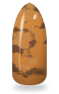
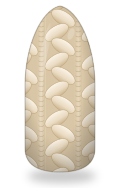
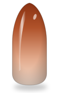
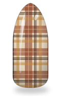
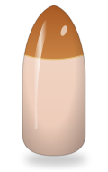
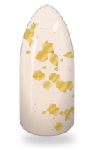
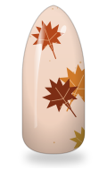
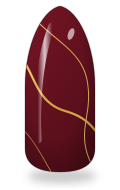
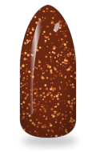
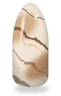

VORSCHAU IM DESIGNPANEL

Schildpatt Karamell
Zopfstrick Creme
Rost Ombré
Karo
Karamell French
Goldfolie
Herbstblätter
Burgund & Goldlinie
Rost Glitzer
Brauner MarmorGLEICHES MUSTER, AUTOMATISCH AUF JEDE FORM ZUGESCHNITTEN